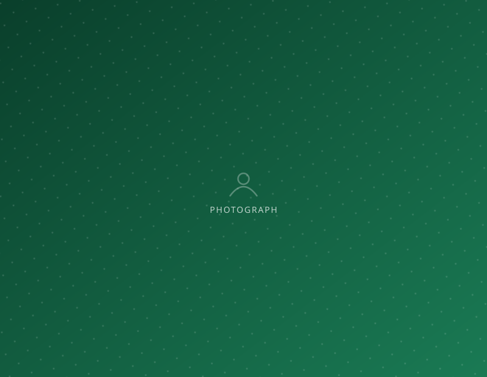

Healthcare within walking distance
Healthcare is fundamentally important for individual well-being and societal prosperity — ensuring longer, more fulfilling lives and a productive workforce.
Distance turns small illnesses into large ones
For families with very little, the barrier is rarely a lack of medicine. It is distance, cost and time. A trip to a distant hospital costs a day’s wages before anyone is seen.
So people wait, borrow, self-medicate, and arrive far later than they should have. Our answer is to put care where the people already are.

Our community health centre
Swaasthya Kendra is the place a family can walk into when someone is unwell, without first calculating what the trip will cost.
Most of what it does is unremarkable — consultations, common illnesses, medicines, advice a family can trust. That is exactly the point.

Health care taken into the classroom
Regular check-ups, awareness sessions and follow-up care for school children — so that being unwell never quietly becomes the reason a child stops attending.
Screening in school reaches the children who would never otherwise be brought to a doctor. A child does not report failing eyesight. They simply stop following the lesson, and get marked down as inattentive.


A child who cannot see the blackboard is not a slow learner. Running a school and a health centre together is how we notice.Prayatn · healthcare
Three things we try to get right
Proximity. Care that requires a journey is care many families will not use.
Continuity. A one-off health camp produces photographs. A centre open week after week produces health.
Connection to the school. Because we run both, a problem noticed in a classroom gets dealt with rather than merely observed.

Ways to support this work
- Doctors, nurses and counsellors who can give regular time.
- Medicines, supplies and equipment for the health centre.
- Fund the School Health Program for a year.
- Run awareness sessions on nutrition, hygiene or adolescent health.

Prayatn runs on people who decided to show up
An hour a week, a professional skill, a child’s school year, a box of books — there is a way for you to be part of this.